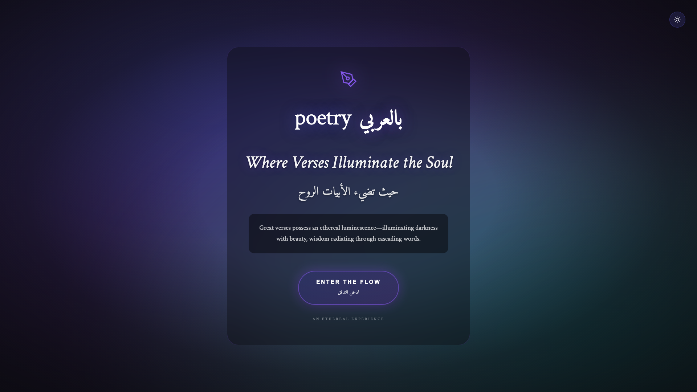

Option 1: Refined Aurora - Focused Gradients
Open Preview →


Dark Mode
Light Mode
Design Philosophy
Same aurora concept, properly executed. Reduces gradient layers from 4 to 2 with clear hierarchy and improved content legibility.
Key Changes
- Simplified Gradients: Two focused gradients (indigo-purple diagonal, teal accent) instead of four competing layers
- Stronger Vignette: Enhanced edge darkening (0.85 opacity vs 0.4) creates clear content focus area
- Content Container: Added backdrop-blur glass card with dark overlay background for text separation and readability
- Enhanced Typography Contrast: Body copy has dark background panel; all text includes proper shadow hierarchy
- Hero CTA Button: Aurora-inspired with gradient fill and strong glow - becomes the focal point instead of blending in
- Slower Animations: Reduced from 18-25s to 28-32s for calmer, more ethereal movement
- Removed Noise: Eliminated 30 shimmer stars - cleaner aurora aesthetic
- Mouse Parallax: Subtle interactive depth when cursor moves
Best For
- Same visual direction as current, but professionally polished
- Maintains brand recognition if current aurora is established
- Improved accessibility with proper contrast ratios